Identité visuelle
Logo, charte graphique, cartes de visite, affiches et signalétique. Une image cohérente partout où l'on vous croise, du flyer à la vitrine.
Logo et déclinaisons · Charte graphique · Affiches, flyers, plaquettes
Demander un devis →Je crée des identités visuelles, des illustrations et des sites web pour les entreprises, les artisans et les associations qui veulent sortir du lot, et qu'on se souvienne d'eux.

Ils m'ont confié leur image
Quatre savoir-faire, une même exigence : des images pensées pour votre public, livrées prêtes à l'emploi.
Logo, charte graphique, cartes de visite, affiches et signalétique. Une image cohérente partout où l'on vous croise, du flyer à la vitrine.
Logo et déclinaisons · Charte graphique · Affiches, flyers, plaquettes
Demander un devis →Encre, aquarelle, crayon ou numérique : des illustrations uniques pour vos affiches, livres, packagings, cadeaux ou réseaux sociaux.
Édition et affiche · Personnages de marque · Portraits et commandes
Demander un devis →Des sites vitrines rapides, beaux et bien référencés, et les images qui les font vivre : visuels pour les réseaux sociaux et photographie.
Site vitrine sur mesure · Visuels réseaux sociaux · Photographie
Demander un devis →Des images vues du ciel pour mettre en valeur un lieu, un chantier, un événement ou un territoire : vidéos immersives en 4K et photos aériennes.
Vidéo 4K immersive (FPV) · Photos aériennes · Lieux, chantiers, événements
Demander un devis →Vous me parlez de votre projet, de votre public et de vos envies. Ce premier échange est gratuit et sans engagement.
Vous recevez un devis clair, puis mes premières pistes graphiques pour choisir une direction ensemble.
J'ajuste la création avec vos retours, jusqu'à ce qu'elle vous ressemble vraiment.
Vous recevez des fichiers prêts à l'emploi, pour l'impression comme pour le web.
Chaque projet part d'un besoin concret. Ouvrez une étude pour découvrir la démarche, étape par étape.
En première page de Google sur 5 des 6 communes, trois mois après la mise en ligne.
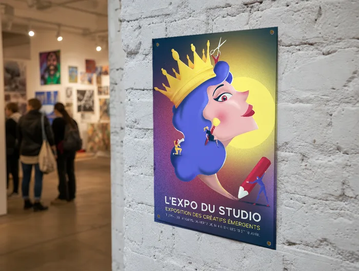
Une identité complète en trois semaines, une quarantaine de visiteurs sans aucune publicité.
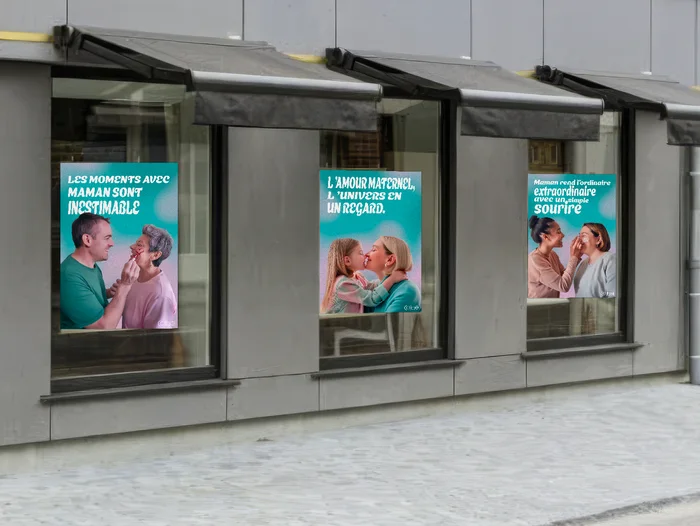
Une collaboration suivie depuis 2023 : triptyques, affiches de soins et dépliant des tarifs.
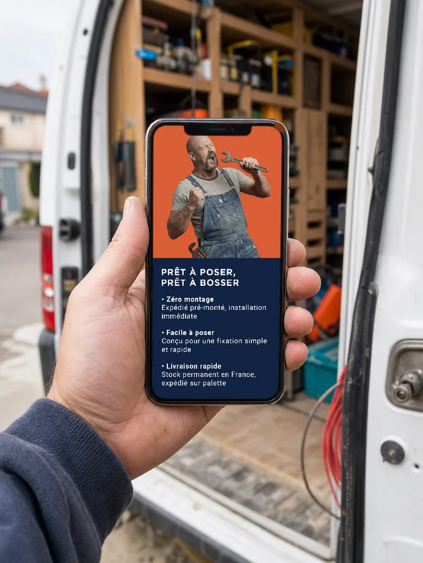
Un visuel principal décliné en huit visuels, plus les modules du site, en version ordinateur et mobile.
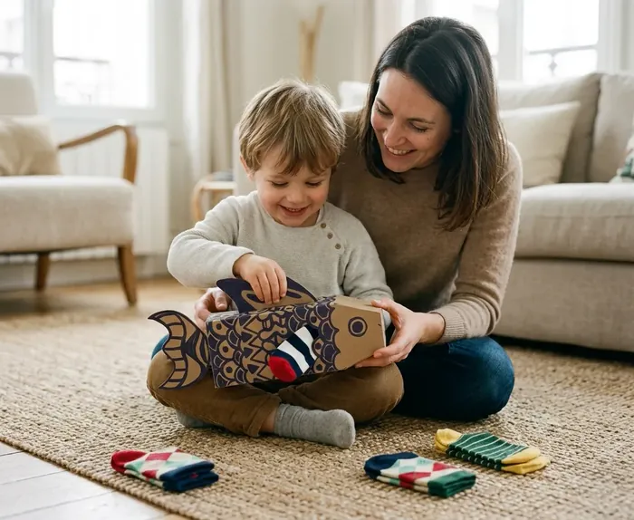
Un emballage qu'on veut garder : plusieurs visiteurs de l'expo étaient prêts à l'acheter.
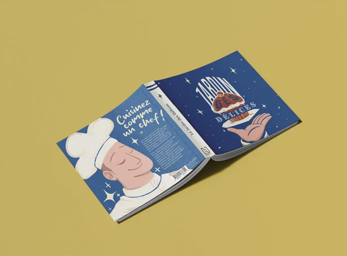
Une maquette complète, de la couverture aux fiches recettes, un univers de couleur par chapitre.
L'association veut faire connaître le patrimoine des communes de Vallons-de-l'Erdre et financer ses chantiers de restauration. Il lui fallait un site complet, simple à parcourir et bien trouvé sur Google.
J'ai pris en charge tout le projet : l'identité du site, le design, le développement, les textes et les photos. Au-delà des pages classiques, j'ai créé des parcours sur carte avec un audioguide, Prospère, un jeu d'aventure narratif qui fait découvrir le patrimoine en suivant une histoire, et une boutique solidaire dont les bénéfices vont aux chantiers. Je réalise aussi les contenus des réseaux sociaux de l'association : des reels « Histoires de Freigné » racontés en voix off, et des stories, comme celle des Journées du patrimoine.
Trois mois après la mise en ligne, le site apparaissait en première page de Google sur 5 des 6 communes du territoire.
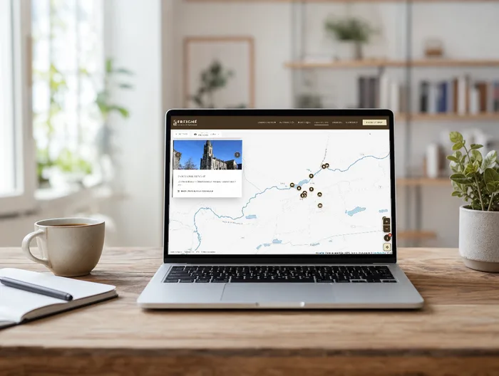
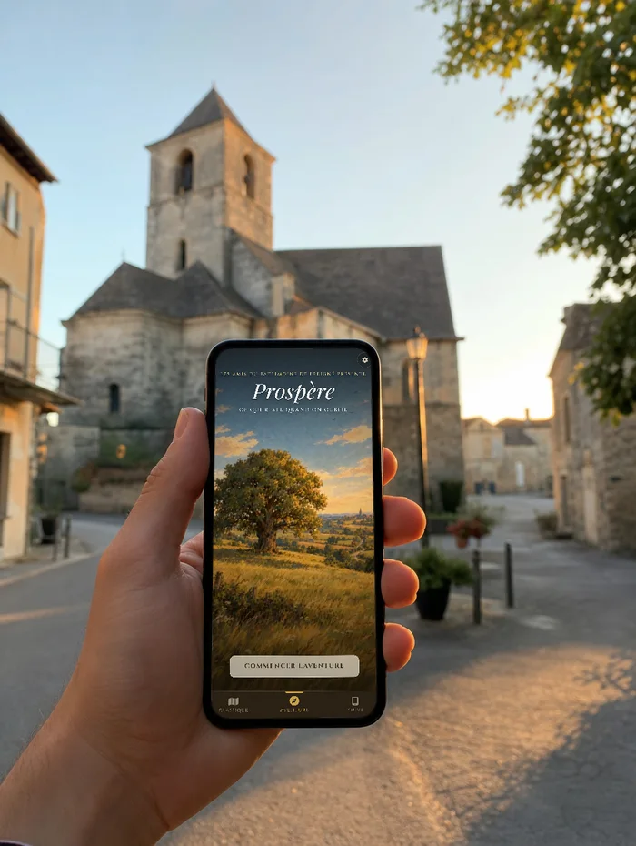
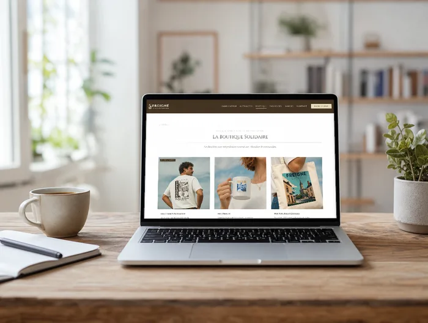
L'Expo du Studio est une exposition organisée avec ma classe du Studio M, pour offrir à de jeunes artistes un premier lieu d'exposition et une vraie rencontre avec le public. Il fallait lui donner une image forte, en très peu de temps.
J'ai créé une direction artistique propre à l'événement, « L'Odyssée des artistes », puis je l'ai déclinée sur tous les supports : affiche, vidéo pour écran, story, t-shirts et signalétique. Du premier croquis aux photos du jour J, l'ensemble a été bouclé en trois semaines.
Une quarantaine de visiteurs, sans aucune publicité préalable : seulement la communication sur place, le jour même.
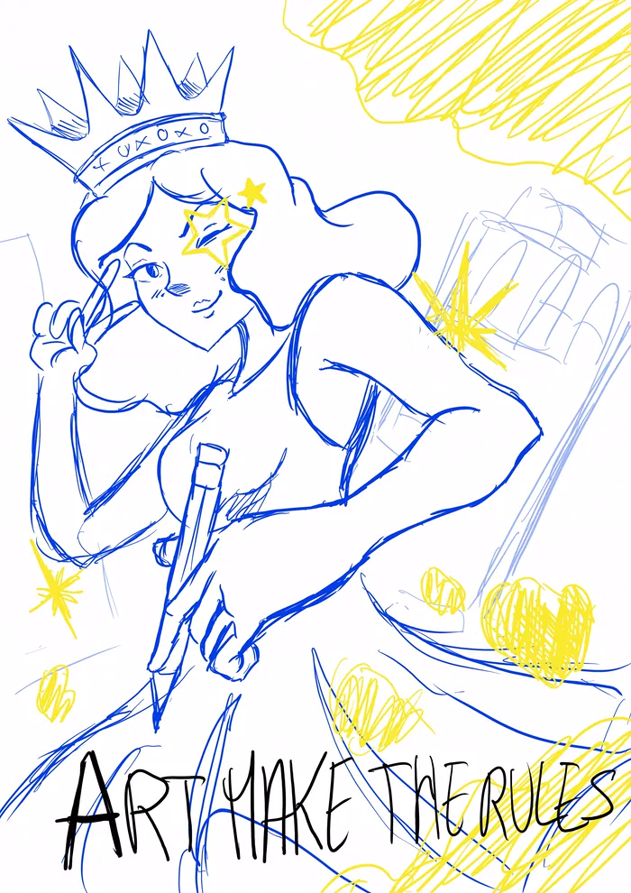
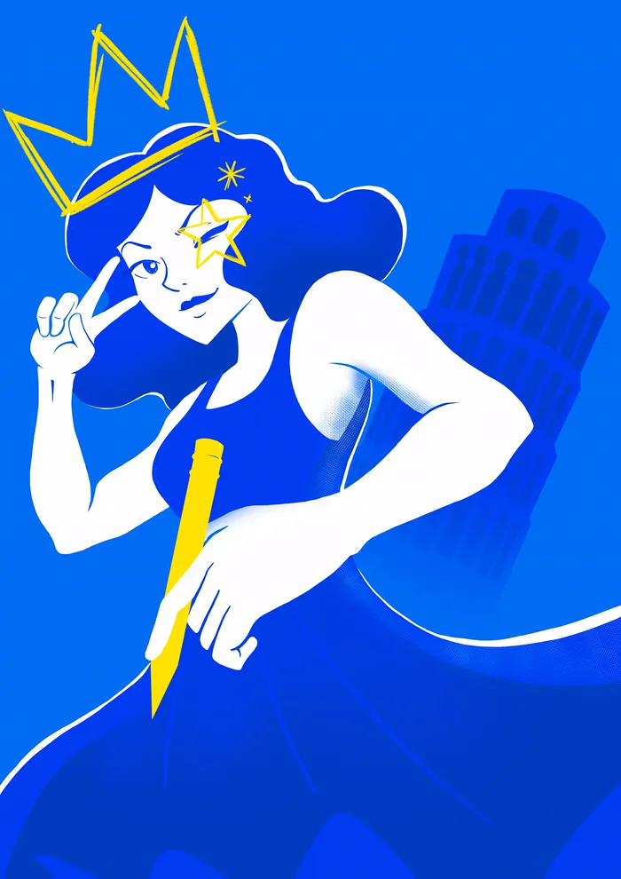
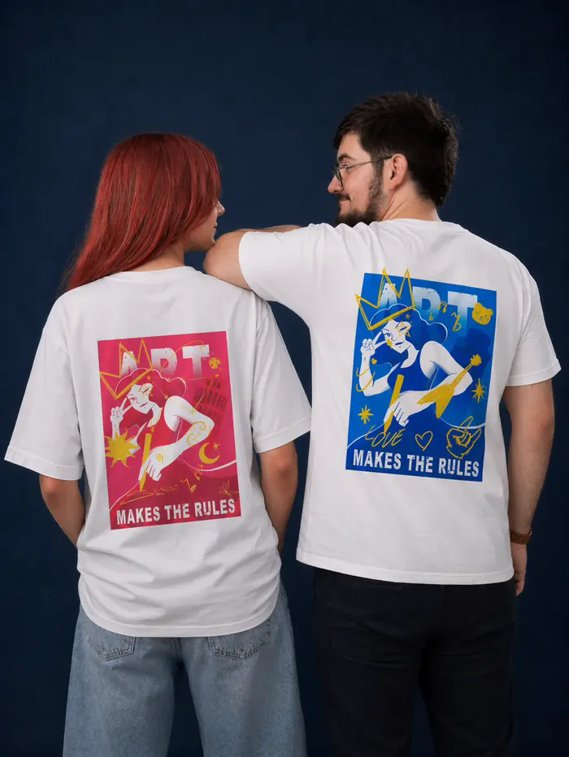
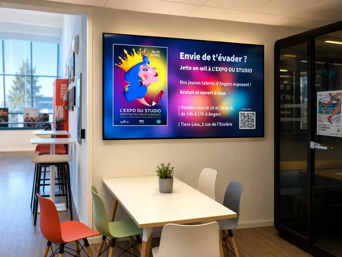
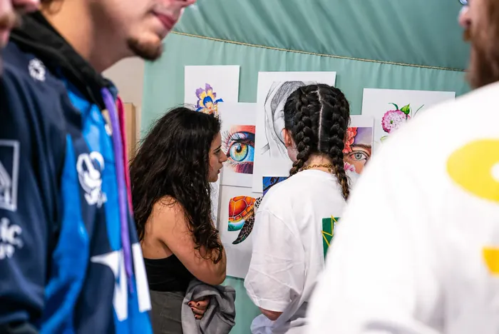
Celibel est un institut de beauté à Nort-sur-Erdre. Il lui faut, au fil de l'année, des supports qui donnent envie de pousser la porte et qui expliquent clairement ses soins.
Depuis 2023, je conçois les affiches grand format de l'institut. Pour la fête des mères, un triptyque : trois affiches qui se répondent, chacune avec sa phrase et son duo. Pour les soins Ariane, une affiche pédagogique où des lignes relient chaque bénéfice à la zone du corps concernée. Pour la gamme enfants Too Fruit, une affiche douce et lumineuse. Je réalise aussi le dépliant des soins et des tarifs, l'invitation à l'inauguration des nouveaux locaux, et je prépare chaque fichier pour l'impression.
Une collaboration suivie dans la durée : l'institut revient vers moi pour ses nouveaux supports.
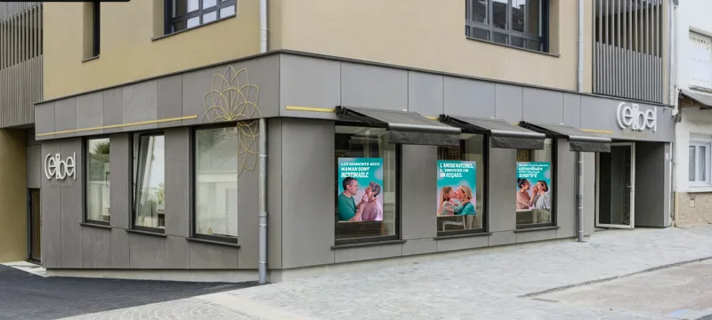
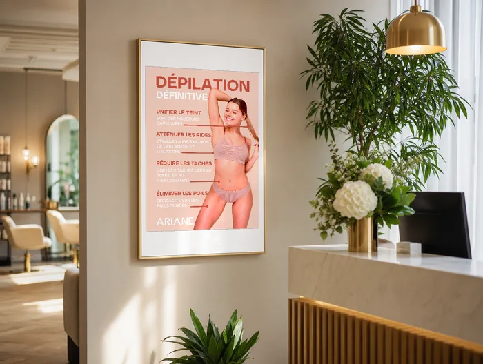
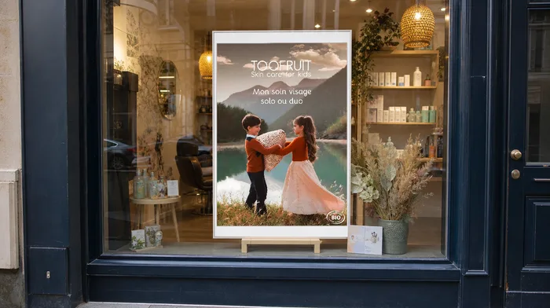
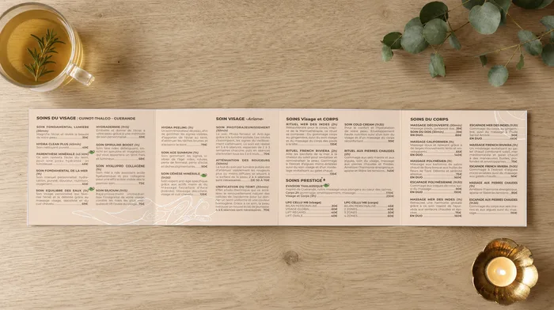
Kit Utilitaire équipe les véhicules utilitaires des artisans. Pour la page d'accueil de son site, la marque voulait une série de visuels qui parlent directement à ses clients : plombiers, électriciens et autres métiers du terrain.
J'ai défini un visuel principal et son ambiance en respectant la charte de la marque, avec des personnages de métier mis en scène. Je l'ai ensuite décliné en huit visuels, un par argument commercial. J'ai aussi conçu le bloc « Avantages pros » : quatre cartes alignées, chacune portée par un personnage de métier, puis un bandeau de réassurance avec ses pictogrammes, et j'ai adapté le tout pour le mobile.
Une série homogène : un visuel principal, huit déclinaisons et les modules du site, livrés en version ordinateur et mobile.
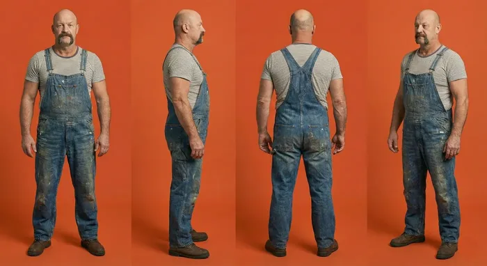
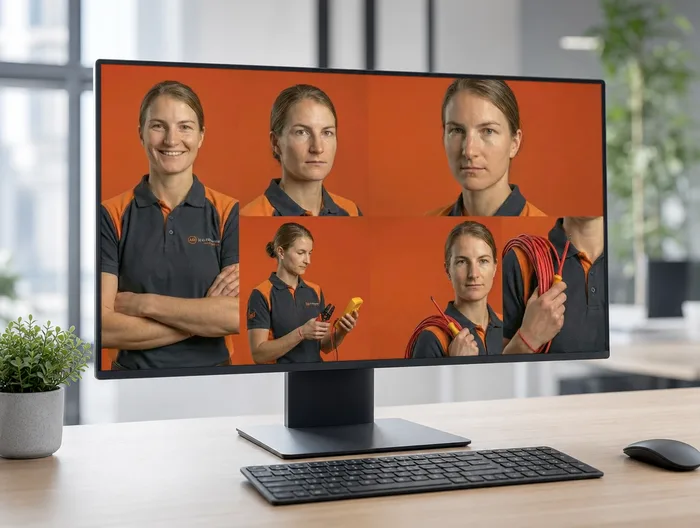
Un projet d'étude : imaginer le packaging d'une marque de chaussettes artisanales, familial et éco-conçu, qui rende la matière visible et palpable. J'ai inventé la marque elle-même, son nom et son logo.
Après des croquis de formes, l'idée s'est imposée : des poissons en carton dont les chaussettes deviennent les nageoires. On ouvre la bouche du poisson pour découvrir la paire, et chaque poisson porte un prénom qui désigne son modèle (Cocasse, Jérémy, Céline). Carton kraft non blanchi, encres végétales.
Présenté en exposition, l'emballage change la fonction de l'objet : il devient un objet qu'on garde, et plusieurs visiteurs étaient prêts à l'acheter.
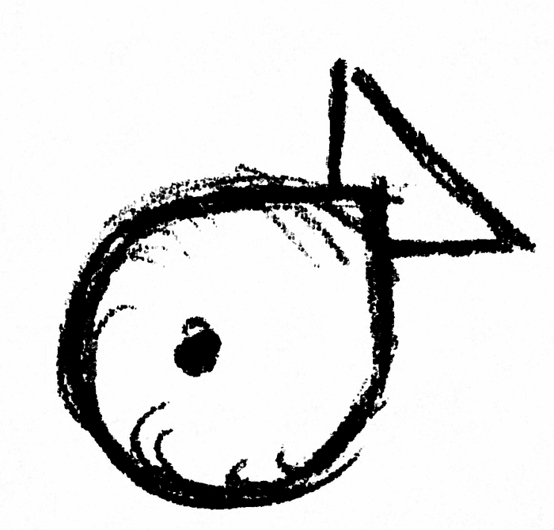
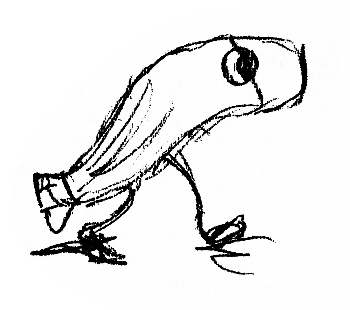
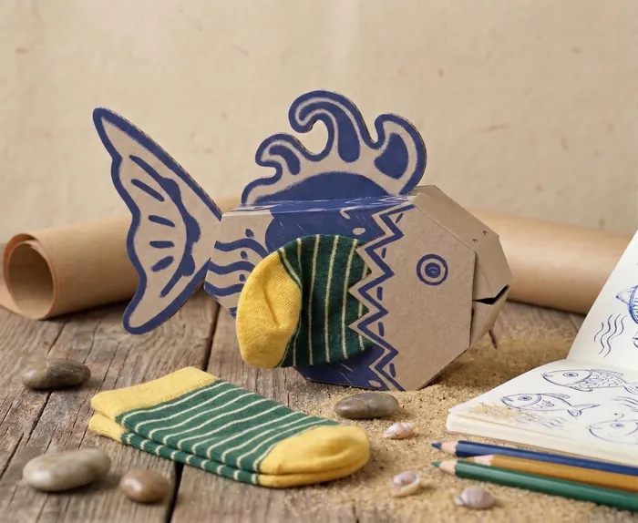
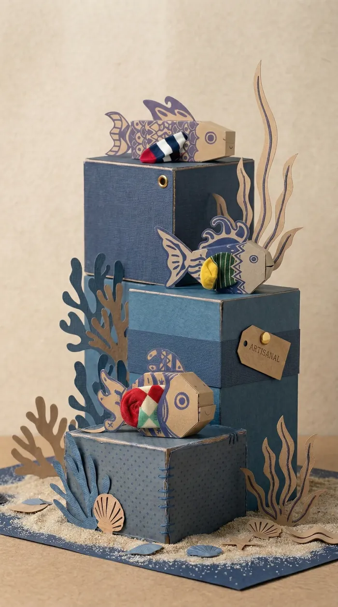
Concevoir un livre de recettes riche en couleurs, agréable à lire et qui donne faim, du premier coup d'œil sur la couverture jusqu'à la dernière fiche recette.
J'ai pris en charge les illustrations, la direction artistique et la mise en page : du croquis de couverture à la maquette complète. Chaque chapitre a son univers de couleur et ses illustrations, et une hiérarchie typographique claire guide l'œil entre titres, ingrédients et étapes.
Une maquette complète et cohérente, de la couverture aux fiches recettes.
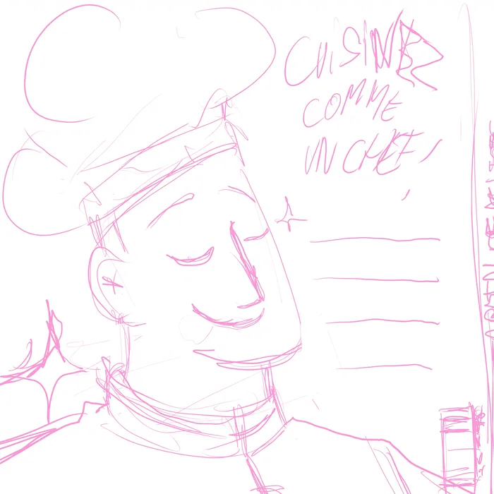
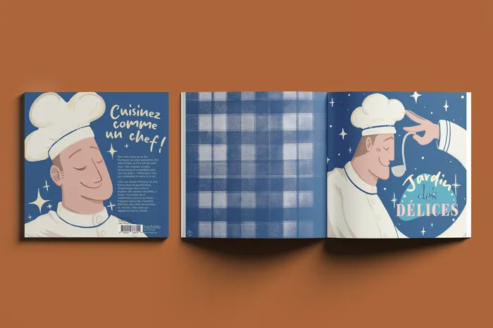
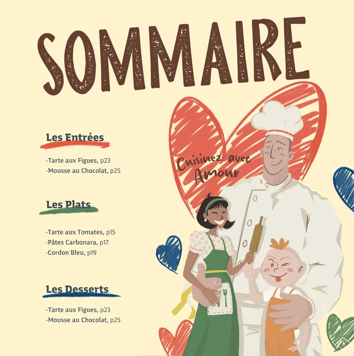
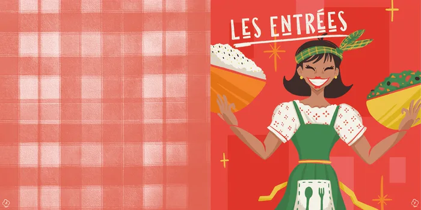
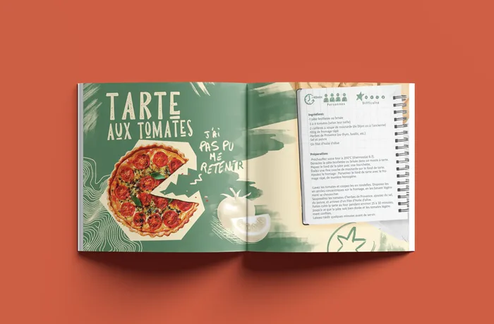
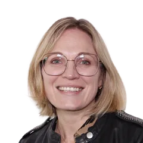
« Matheo s'est rapidement démarqué par son excellente capacité d'écoute, sa créativité et sa force de proposition. […] Je recommande vivement Matheo à toute structure recherchant un collaborateur créatif, impliqué, force de proposition et doté d'un excellent esprit d'équipe. »
Je m'appelle Mathéo Gaudin. Graphiste et illustrateur indépendant depuis 2023, je travaille entre Nantes et Angers.
Mon point de départ, c'est le dessin : du croquis au crayon jusqu'à l'illustration numérique, j'aime donner un trait reconnaissable à chaque projet. Je le mets au service de vos besoins concrets : une identité qui inspire confiance, une affiche qui attire du monde, un site qu'on trouve sur Google.
J'accompagne aussi bien les entreprises que les commerces, les artisans et les associations, avec la même attention : écouter d'abord, proposer ensuite.
Décrivez votre besoin en quelques lignes : je vous réponds avec des questions ou une première estimation. Le devis est gratuit.